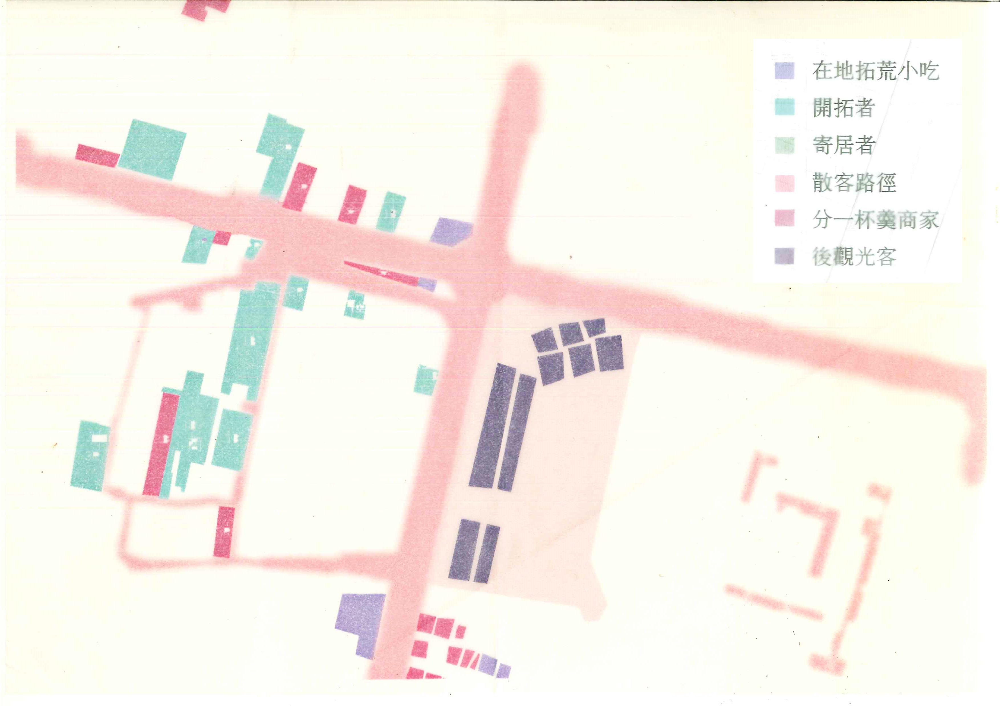
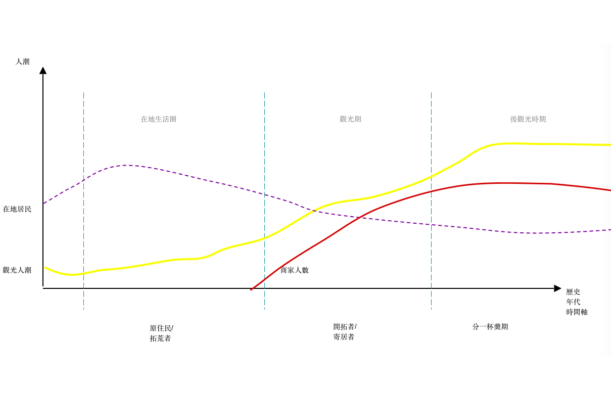
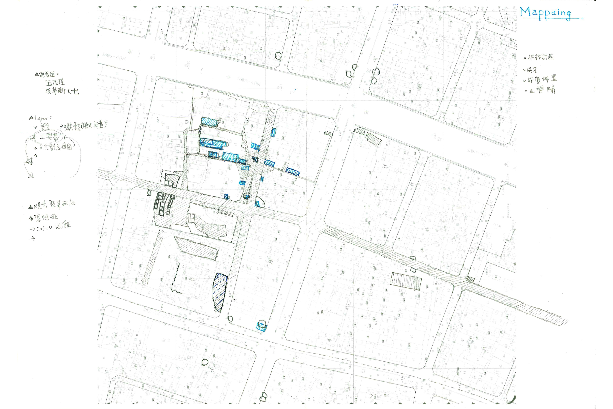

｜觀察緣起
目前的台南，在各媒體的報導下，不外乎以「美食」、「古蹟」等做為城市的標籤，這些媒體大多也會針對幾個區域如安平老街、神農街或是像最近才剛登上各媒體版面的正興街進行報導。這些區域不自覺的成為了在觀光行為下“代表台南的”事物。然而幾年過後，這些地方好像與過去有了不少的差別，不論在景觀與內容上都好似形成了另一種面貌與價值。欲以「路上觀察」的形式，在尋找另外一種層面與角度時，試著站在「觀光」上（外）去看「觀光」。
- 
- 
- 
-

於正興街工作的團員宛儀與子瑩進行的「觀光觀察分享」。
｜觀察的安排
有鑒於觀光行為其實不限於場域，從與媒體的接觸開始，我們就已在進行一種「觀光」行為，加上對台南的居民來說，很多時候生活空間與觀光場域有很大的重疊，如果要讓參與者抽離，以另一種角度去觀察「觀光」，也許是較難以想像的。故本次工作坊設計成三階段：
第一階段：
邀請工作於熱門觀光區—“正興街”的團員先進行觀察分享，從日常生活的紀錄，以另外一種角度去看這個觀光場域。
第二階段：
以《觀光客的凝視3.0》（The Tourist Gaze 3.0）作為活動開始的導讀與討論，以此書「展演轉向」的理論作為一種切入的觀點，將每個觀光場域都視為一種展演，規劃者（導演）的設計（劇本）讓遊客（演員）在觀光過程（表演過程）達到所想要的情緒與感受。但在這樣的關係中，似乎遊客是演員也同時是觀眾（觀光凝視）。
第三階段：
以兩個區域「正興街」與「神農街」為範圍，進行各觀光觀察與紀錄，如：觀光行為、觀光場域邊界、觀光設置等，此外，也安排一個任務，參與者必須以「觀光客」的身份，去“觀光”觀光場域，以一種「觀光客行為」的姿態去進行記錄。
｜觀察報告
「正興街」與「神農街」在這次的觀察中，呈現了兩種不同面向。在神農街裡，來自日本的投幣機成為了觀光客的重點目標，包含點心、飲料或是百元抽獎的禮物盒，這些機器受到許多人的喜愛、排隊。正興街的觀光行為就比較集中在重點店家，除了熱門食物的排隊如蜷尾家、炸雞洋行、小卷米粉等，並以正興幫建立的徒步區作為中心........。
在地圖的紀錄中，神農街在路線與範圍上相對較單純，不常看到民眾有太多岔出神農街外的路徑。參與者紀錄了多處觀光客自拍的景點與內容，有趣的是通常自拍背景都在很簡單的木牆前，甚至“只要放兩張椅子在店外，就有人會坐在上面自拍”，或許是不是在特別的背景下拍照也不是很重要。而正興街的小組則在街上各岔路紀錄觀光客移動的範圍（觀光界線），由於巷弄內還有當地住民，常見觀光客走入巷內後，猶疑到底哪裡是界限（觀光盡頭？）。此次工作坊場地就位於正興街巷內-正十八聯合工作室，觀光客於活動進行中也曾不小心走入，於是在觀光客走進時，瞬間我們也從（觀光）舞台下變成了舞台上的一部份。
工作坊設定的任務—--「觀光」觀光場域，將觀光場域視為一舞台，期望參與者脫離舊有視角，站在「舞台」外，以觀光客的行為「觀光」這些觀光劇場，期許能產生不同的觀察結果。過程中，參與者在看到各種觀光行為發生時，多以打卡或自拍去跟眼前這些觀光劇場進行互動，其成果已經近乎完全去除原本場域中所設計的脈絡，觀光再觀光的影像好像是一種奇觀，觀光行為以一種脫離場域脈絡的姿態（動作）展現，我們看到的就只剩下那些觀光中的動作。從結尾的討論與回饋裡，也可看到參與者表示此任務有很多樂趣，在這樣去脈絡，也帶有誇張的行為裡，我們搞不好也只是滿足單純“娛樂‘的觀光意義。
此次工作坊是由於在台南感受到「生活與觀光交織的模糊感」，觀光場域逐漸擴展與印象中的許多街道融合，形成另一種異質空間（文化）。我們都在好奇個人是否會在生活的軌跡下，逐漸接受與習慣這樣的轉變下所提供的規則。故工作坊以「路上觀察」團體的宗旨以「觀光展演」的視角下進行「再觀察」，試圖大機制下進行身體與想像上的抽離。